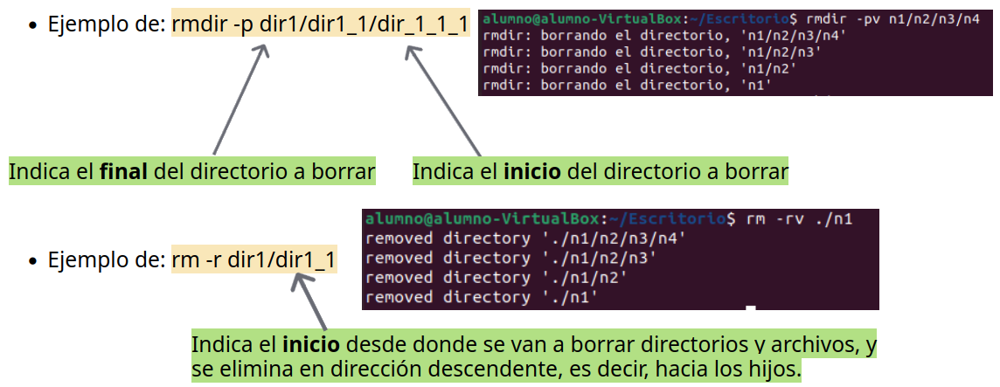

Eliminar directorios
1. Borrar ficheros y directorios.
Una de las formas para borrar ficheros y directorios en Linux es el comando rm, cuya sintáxis es: rm [opciones] lista_archivos o directorios.
Opciones:
-i: pregunta antes de borrar el fichero o directorio.
-r: borra los directorios, los ficheros que contengan y los directorios que estén por debajo de él, de forma recursiva.
-v: muestra un mensaje por cada directorio o fichero borrado.
2. Eliminación de directorios.
Para la eliminación de la de los directorios podemos usar el comando rmdir, el cual tiene la siguiente sintáxis: rmdir [opciones] lista_archivos.
Opciones:
-p: elimina el directorio y sus predecesores.
-v: muestra un mensaje por cada directorio eliminado.
3. Ejemplos de uso de ambos casos y sus diferencias.
